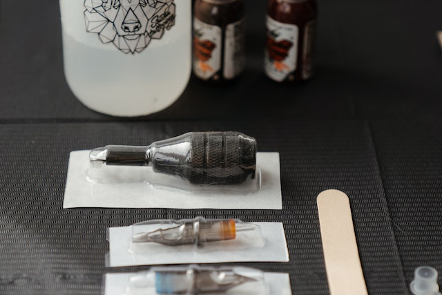
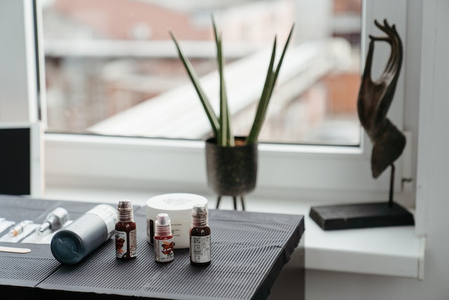

Sugerencias
Cuidar la piel antes y despues de tatuarse es esencial para garantizar una adecuada cicatrizacion y mantener el aspecto y la salud de la piel a largo plazo. A continuacion algunos consejos para el cidado de tu puel antes y despues de ralaizarse un tatuaje
Preparación Previa
- Investiga y elige un tatuador profesional y con experiencia, busca reseñas en linea.
- Haz una cita para consulta previa. Habla con el tatuador sobre tus ideas y expectativas, y asegurate de que comprenda lo que deseas.
- Observa la higiene del estudio de tatuajes durante tu visita. Asegurate de que cumplan con todas las normas de limpieza y esterilizacion para garabtizar tu seguridad.
- Evita tomar alcohol o drogas antes de tatuarte, ya que pueden dilaar los vasos sanguíneos y difucltar el proceso del tatuaje.
- Asegúrate de estar descansado y haber comido antes de tu sesión. Esto te ayudará a sentirte maás cómodo durante el proceso.

Cuidado Posterior
- Sigue las indicaciones de cuidado proporcionadas por tu tatuador. Estas pueden incluir limpiar suavemente el tatuaje con agua y jabon suave, aplicar una crema curativa y evitar exponerlo al sol durante las primeras semanas.
- Mantén ek tatuaje hidratado con uma crema humectante reocmendada por tu tatuador. Esto ayudara a que el tatuaje sane coreectamente y evitará que seque y se agriete.
- Evita rascar o frotar el tatuaje, ya que esto podria retirar la inta o dañar la piel.
- Evita el agua caliente, los baños largos o nadar en piscinas o en el mar durante las priemras semans. El agua puede contener bacterias que podrian infectar el tatuaje.
- Protege tu tatuaje del sol con ropa o protector solar. La exposición solar puede desvanecer los colores del tatuaje con el tiempo.
.jpg)
Expetactiva

Tinta
Rercuerda, cada tatuaje y cada persona son diferentes, por lo que siempre es mejor seguir las indicaciones específicas de tu tatuador. Si tienes alguna duda o consulta, no dudes en contactar a tu tatuador o busscar atencion medica.